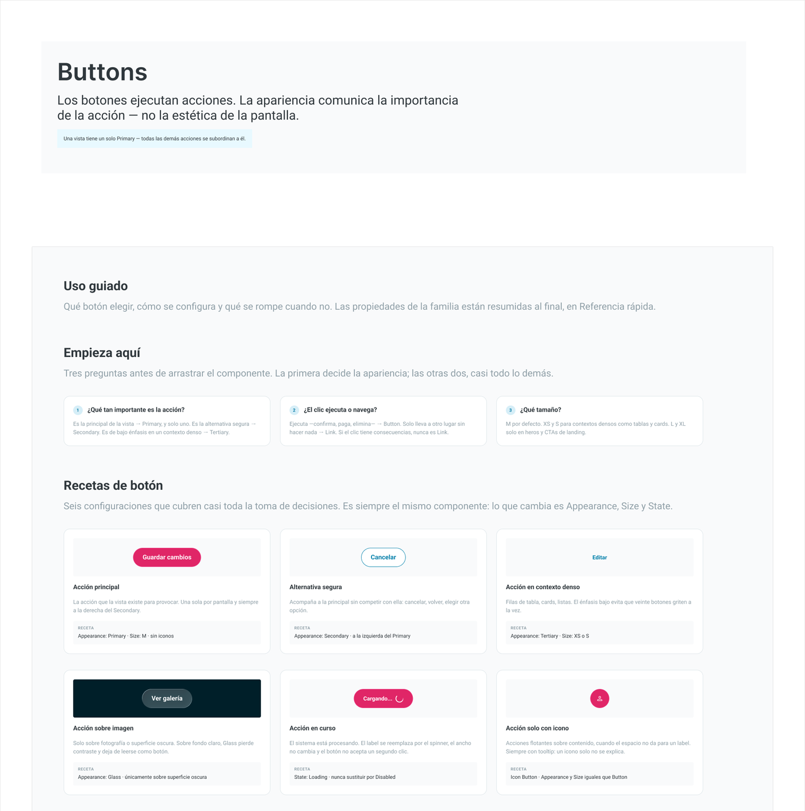
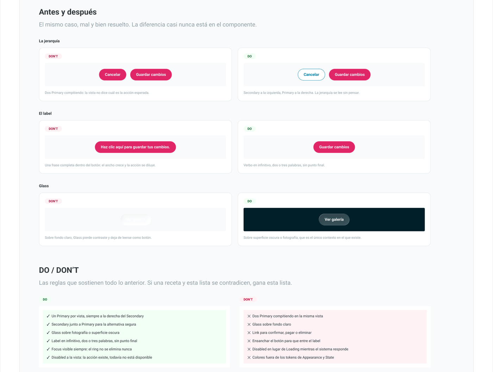
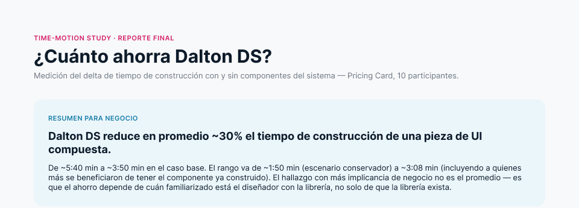

Varios ecommerce, una experiencia fragmentada
Dalton 2.0 es la librería de componentes de Pacífico Seguros: la construcción de un lineamiento de diseño único para sus plataformas.
Pacífico opera varias páginas de seguros en ecommerce, construidas en momentos distintos y muchas en silos, lo que fragmentaba la experiencia. La consolidación tecnológica abría la oportunidad de unificarlas, con un lineamiento acordado entre Diseño y Negocio.
Parte del equipo Dalton, de la priorización a la medición
- Facilité el assessment y diseñé el taller con 15 diseñadores y Negocio.
- Fui parte del equipo que hizo el inventario y la priorización de secciones.
- Lideré el estudio tiempo-movimiento con la librería ya en uso.
Qué construir primero: 10 secciones en 3 niveles
En el taller cruzamos qué secciones usan los ecommerce con su impacto en los KPIs de negocio, y priorizamos 10 en tres niveles de uso.
Priorización del taller — nivel según frecuencia de uso
- Criterio: frecuencia de uso e impacto en KPI, no completitud visual.
- Los niveles ordenan qué se construye primero: core, frecuentes y soporte.
Documentación que enseña a decidir
Cada componente tiene una página de uso guiado con la misma anatomía, construida en equipo por el grupo de Dalton.

Uso guiado y recetas

Antes y después, DO / DON'T
- Empieza aquí: tres preguntas antes de arrastrar el componente.
- Recetas: configuraciones que cubren casi todas las decisiones.
- Antes y después, reglas DO / DON'T y preguntas frecuentes.
~30% menos tiempo al construir una pieza con Dalton
Con 10 participantes medimos el tiempo de construir la misma pieza, la Card de planes, desde cero y con Dalton, ya con la librería en producción: de ~5:40 a ~3:50 min en el caso base.

Resumen del estudio tiempo-movimiento
Ahorro por perfil de diseño — hipótesis, 2 a 5 personas por perfil
- Hallazgo: el ahorro depende de qué tan familiarizado está el diseñador con la librería, no solo de que exista.
- El ahorro va de ~1:50 a ~3:08 min por pieza, según el escenario.
- Es una primera medición (n=10, una sola pieza). Siguiente paso: una segunda ronda con más participantes por perfil.